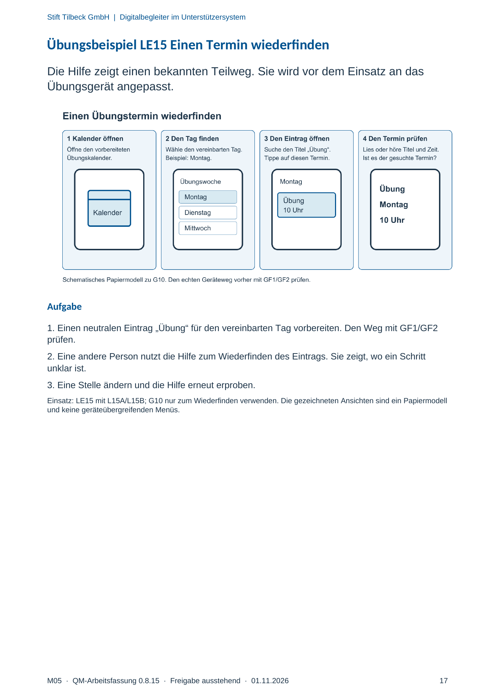

M05 · Originalseite 17
Übungsbeispiel LE15 Einen Termin wiederfinden
Gezielte Original-Druckauswahl.
Fragen und Ankreuzfelder werden auf dem Ausdruck bearbeitet. Die Lesefassung speichert keine Antworten.
Lesefassung · Seite 17
Stift Tilbeck GmbH | Digitalbegleiter im Unterstützersystem
M05 · QM-Arbeitsfassung 0.8.15 · Freigabe ausstehend · 01.11.2026 17
Übungsbeispiel LE15 Einen Termin wiederfinden
Die Hilfe zeigt einen bekannten Teilweg. Sie wird vor dem Einsatz an das
Übungsgerät angepasst.
Aufgabe
1. Einen neutralen Eintrag „Übung“ für den vereinbarten Tag vorbereiten. Den Weg mit GF1/GF2
prüfen.
2. Eine andere Person nutzt die Hilfe zum Wiederfinden des Eintrags. Sie zeigt, wo ein Schritt
unklar ist.
3. Eine Stelle ändern und die Hilfe erneut erproben.
Einsatz: LE15 mit L15A/L15B; G10 nur zum Wiederfinden verwenden. Die gezeichneten Ansichten sind ein Papiermodell
und keine geräteübergreifenden Menüs.
Originalseite ansehen
